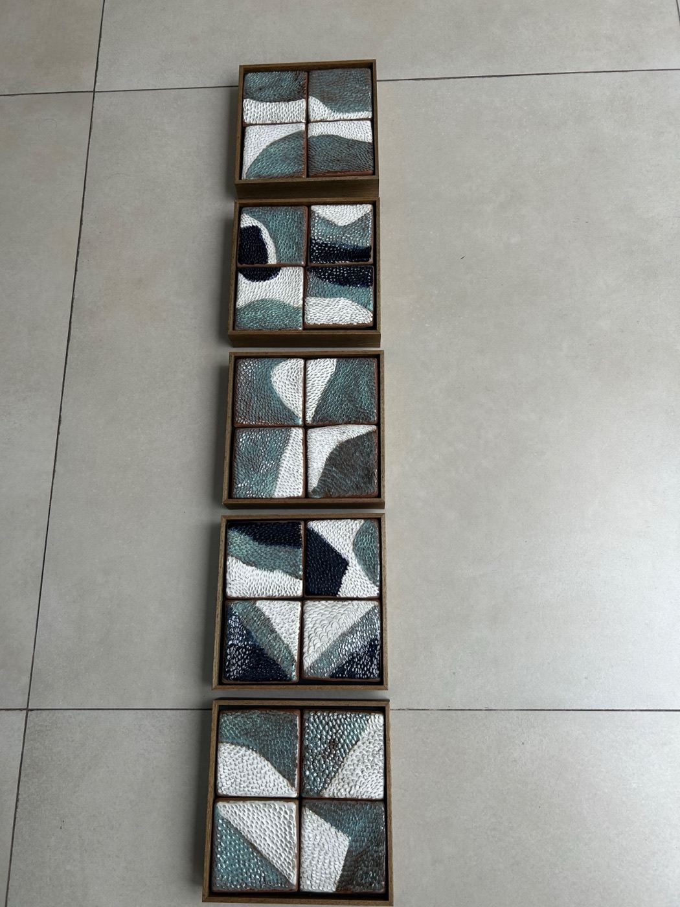
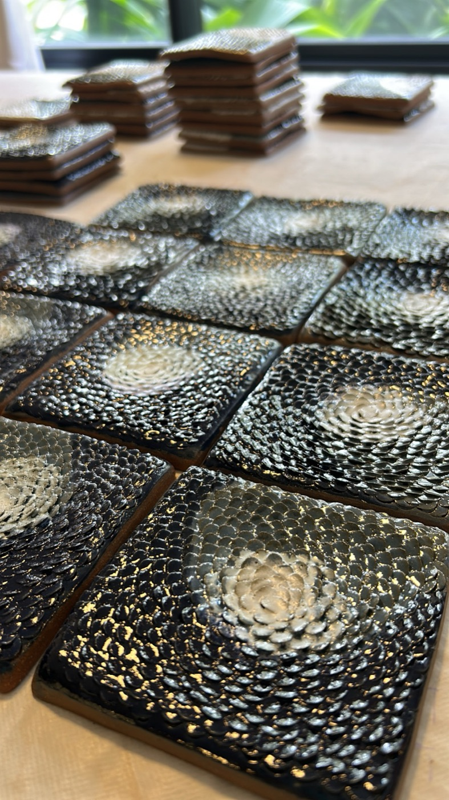
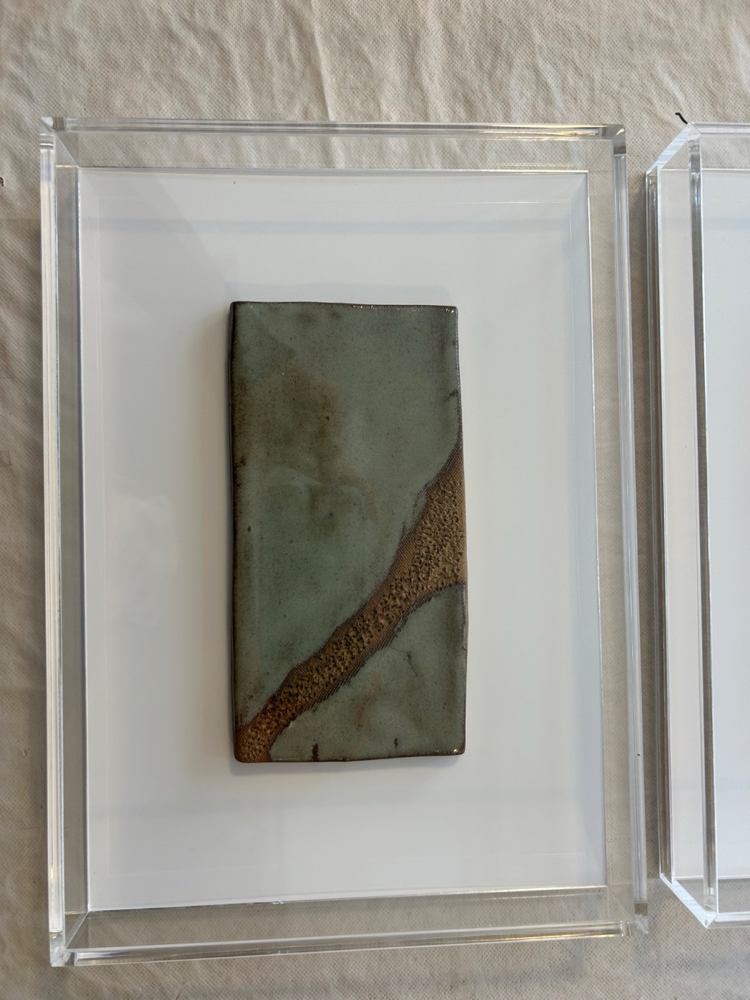
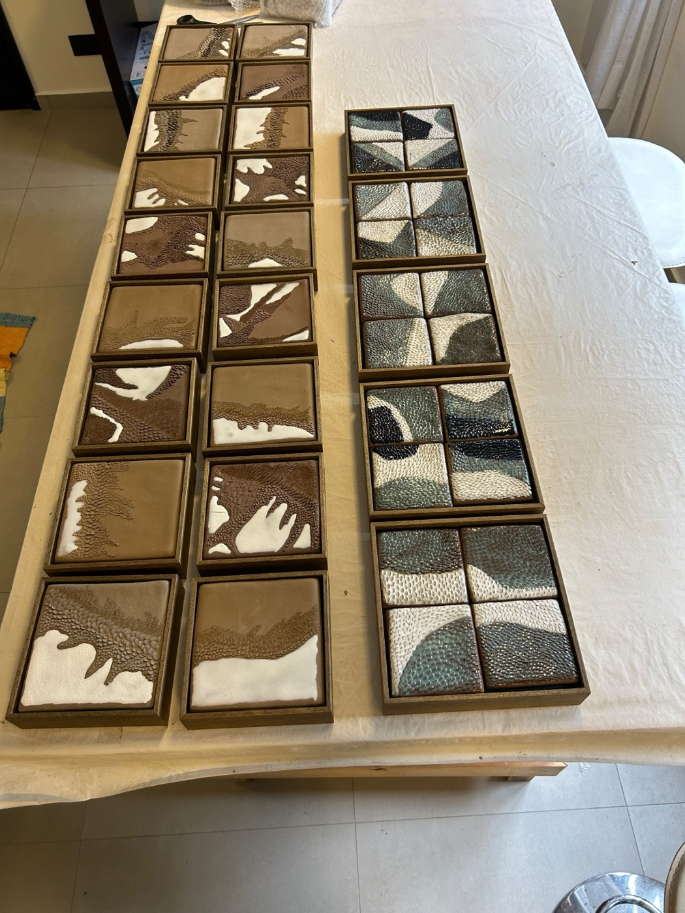
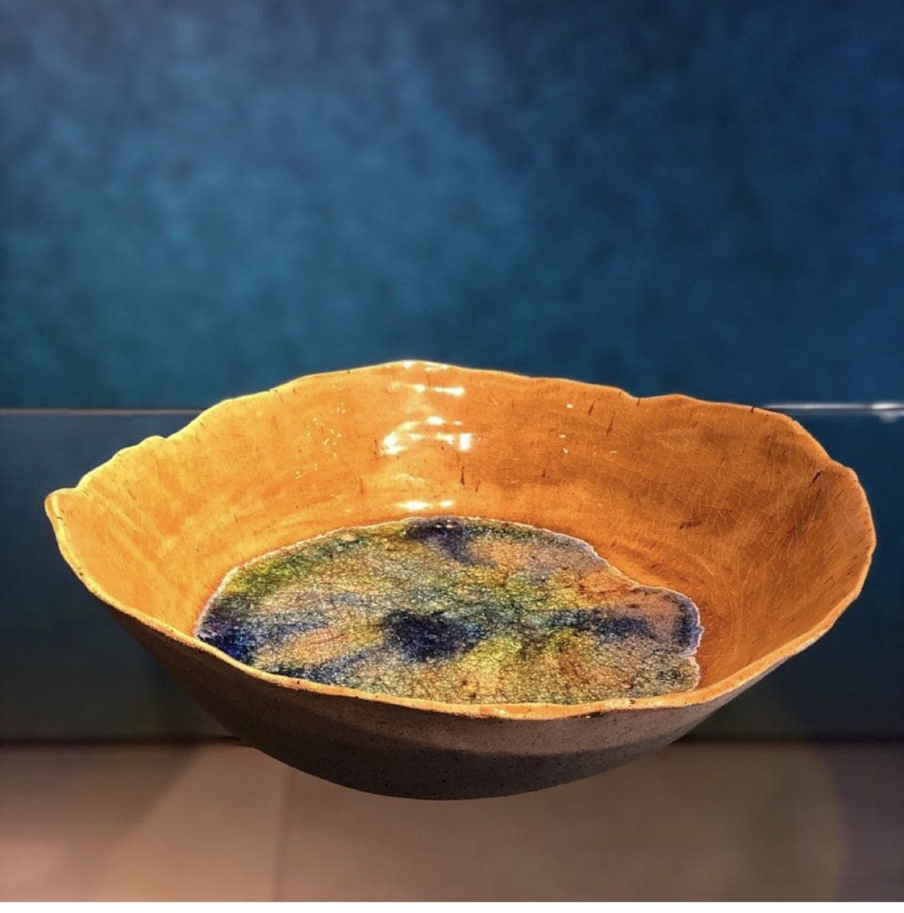
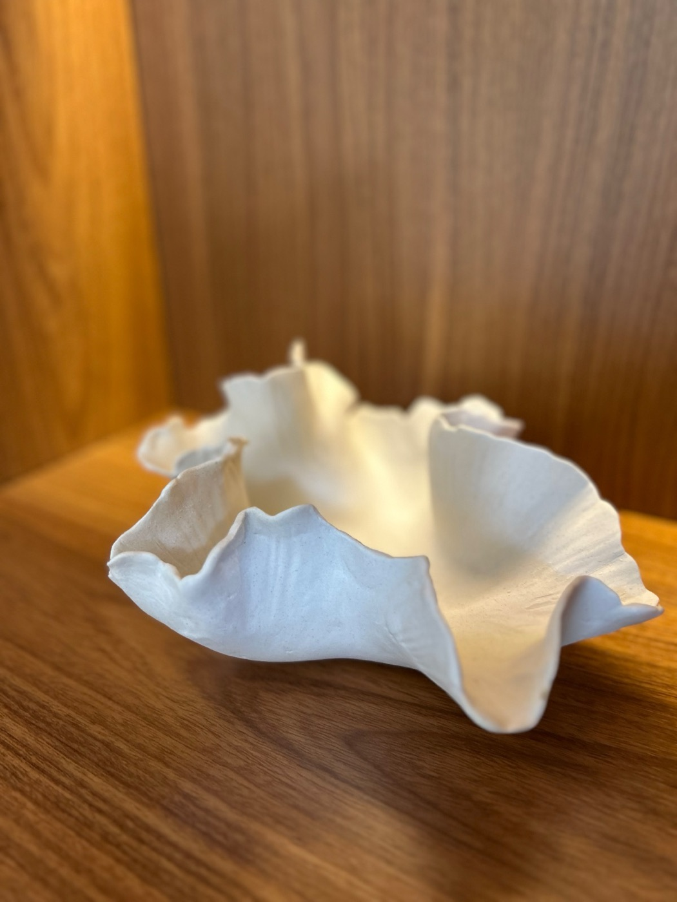
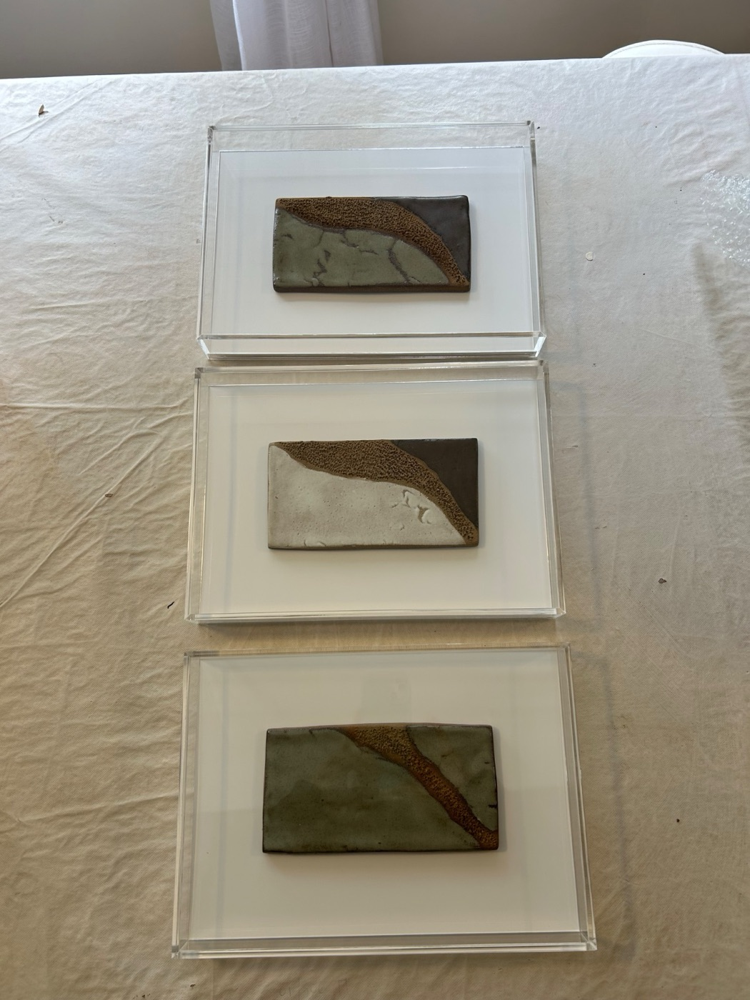
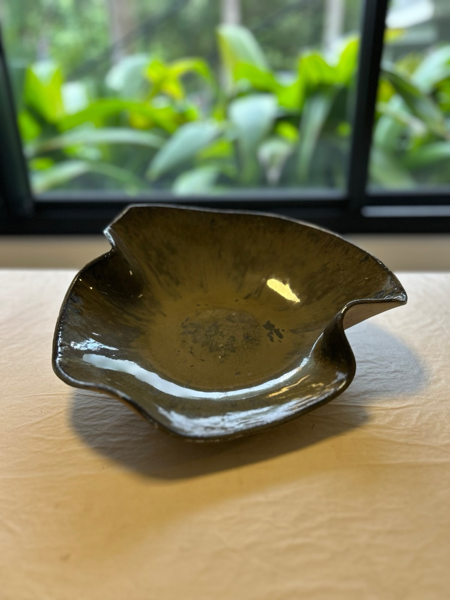
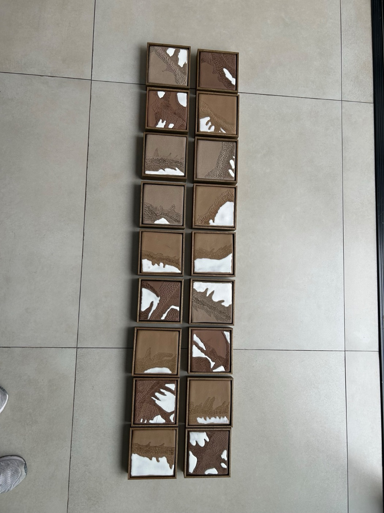
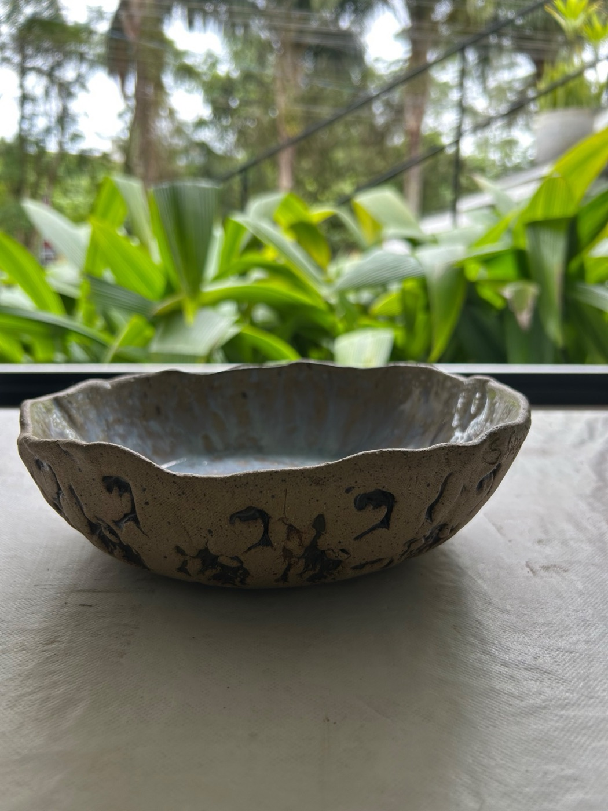

Essências
Placas de cerâmica esmaltadas em várias cores, cada uma na sua moldura de madeira. Sozinhas ou em conjunto, viram um painel na parede.
Obras
Todas as peças são feitas uma a uma. Cores, tamanhos e combinações podem ser pensados junto com você.

Placas de cerâmica esmaltadas em várias cores, cada uma na sua moldura de madeira. Sozinhas ou em conjunto, viram um painel na parede.

Cerâmica com relevo e esmalte, em moldura de madeira. A luz bate diferente ao longo do dia e a peça muda junto.

A peça de cerâmica dentro de uma caixa de acrílico transparente: parece flutuar na parede, como numa galeria.
Do ateliê







Cada peça é única: o esmalte reage de um jeito em cada queima, por isso nenhuma sai igual à outra.